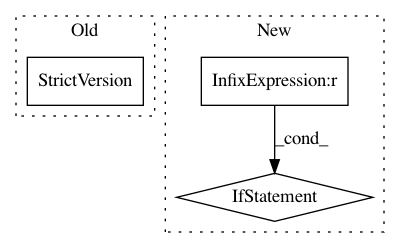

3d8011f9ce1dba31df7c83f07dcf481a65926aa4,dipy/core/optimize.py,,,#,13
Before Change
import scipy
scipy_version = scipy.__version__
scipy_version = StrictVersion(scipy_version.split(".dev")[0])
minimize_version = StrictVersion("0.11")
if scipy_version >= minimize_version:
After Change
import numpy as np
import scipy
SCIPY_LESS_0_12 = LooseVersion(scipy.__version__) < "0.12"
if not SCIPY_LESS_0_12:
from scipy.optimize import minimize
else:
from scipy.optimize import fmin_l_bfgs_b, fmin_powell
class Optimizer(object):
def __init__(self, fun, x0, args=(), method="L-BFGS-B", jac=None,
hess=None, hessp=None, bounds=None, constraints=(),
In pattern: SUPERPATTERN
Frequency: 3
Non-data size: 3
Instances
Project Name: nipy/dipy
Commit Name: 3d8011f9ce1dba31df7c83f07dcf481a65926aa4
Time: 2014-11-21
Author: garyfallidis@gmail.com
File Name: dipy/core/optimize.py
Class Name:
Method Name:
Project Name: nipy/dipy
Commit Name: 419b97c0e7c1c013c6b5bef52ae2e81a2753547c
Time: 2014-11-14
Author: garyfallidis@gmail.com
File Name: dipy/core/optimize.py
Class Name:
Method Name:
Project Name: onnx/onnxmltools
Commit Name: c2c14e608a7abb0ea3e742814564e0504d040fcf
Time: 2018-10-17
Author: xadupre@users.noreply.github.com
File Name: onnxmltools/convert/common/_topology.py
Class Name: Topology
Method Name: __init__